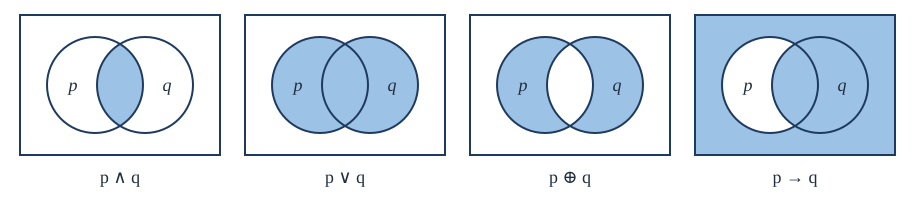

Chapter 1: Propositional Logic¶
Statements, connectives, truth tables and valid arguments
Learning outcomes
After this chapter you should be able to:
- decide whether a sentence is a proposition, and give its truth value when it is;
- build compound propositions with the connectives \(\neg, \wedge, \vee, \oplus, \to, \leftrightarrow\) and evaluate them with truth tables;
- state the converse, inverse and contrapositive of a conditional, and say which of them are equivalent to it;
- translate between English sentences and logical formulas;
- prove logical equivalences with truth tables and with the standard laws, and put a formula into disjunctive or conjunctive normal form;
- check whether an argument is valid, using the rules of inference, and recognise the common fallacies.
1.1 Propositions¶
Logic studies the form of correct reasoning. Its smallest unit is the proposition.
Definition: proposition
A proposition is a declarative sentence that is either true or false, but not both. Its truth value is \(\mathrm{T}\) (true) or \(\mathrm{F}\) (false).
Each of the following is a proposition:
- "New Delhi is the capital of India." (true)
- "\(7 + 5 = 13\)." (false)
- "Every even integer greater than 2 is the sum of two primes." (This is Goldbach's conjecture. Nobody knows whether it is true, but it is certainly one or the other, so it is a proposition.)
None of the following is a proposition:
- "What time is it?" (a question)
- "Close the door." (a command)
- "\(x + 1 = 4\)." (its truth depends on \(x\), which has not been given a value; Chapter 2 deals with such sentences)
- "This sentence is false." (if it were true it would be false, and if false it would be true, so it cannot be given either value)
We name propositions with lowercase letters \(p, q, r, s, \dots\), called propositional variables. A proposition that cannot be broken into smaller propositions is atomic; one built from others with words such as "not", "and", "or" and "if ... then" is compound. Propositional logic studies how the truth value of a compound proposition depends on the truth values of its parts, and on nothing else.
Key idea
In propositional logic we do not care what a proposition says, only whether it is true. "It is raining and I am tired" and "\(2\) is prime and \(9\) is a square" have the same form, \(p \wedge q\), and that form alone decides when they are true.
1.2 Connectives and truth tables¶
A connective builds a new proposition from one or two given ones. Each connective is defined by a truth table, which lists the truth value of the result for every combination of truth values of the parts.
Negation¶
The negation of \(p\), written \(\neg p\) and read "not \(p\)", is true exactly when \(p\) is false. The negation of "Today is Friday" is "Today is not Friday", or "It is not the case that today is Friday".
| \(p\) | \(\neg p\) |
|---|---|
| T | F |
| F | T |
Table 1.1. Negation.
Conjunction, disjunction and exclusive or¶
The conjunction \(p \wedge q\) ("\(p\) and \(q\)") is true when both \(p\) and \(q\) are true. The disjunction \(p \vee q\) ("\(p\) or \(q\)") is true when at least one of them is true. The exclusive or \(p \oplus q\) is true when exactly one of them is true.
| \(p\) | \(q\) | \(p \wedge q\) | \(p \vee q\) | \(p \oplus q\) |
|---|---|---|---|---|
| T | T | T | T | F |
| T | F | F | T | T |
| F | T | F | T | T |
| F | F | F | F | F |
Table 1.2. Conjunction, inclusive or and exclusive or.
Inclusive or
In mathematics "or" means the inclusive or: "\(p\) or \(q\)" is true when both are true. English is ambiguous. "Students who have studied calculus or programming may enrol" admits a student who has studied both (inclusive). "The meal comes with tea or coffee" usually means one, not both (exclusive). When you mean exclusive or, say so: "either ... or ..., but not both".
The conditional¶
The conditional \(p \to q\) ("if \(p\), then \(q\)") is false in exactly one case: when \(p\) is true and \(q\) is false. Here \(p\) is the hypothesis (or antecedent) and \(q\) the conclusion (or consequent).
| \(p\) | \(q\) | \(p \to q\) | \(p \leftrightarrow q\) |
|---|---|---|---|
| T | T | T | T |
| T | F | F | F |
| F | T | T | F |
| F | F | T | T |
Table 1.3. The conditional and the biconditional.
The last two rows surprise most people: when the hypothesis is false, the conditional is true, whatever the conclusion. Think of \(p \to q\) as a promise. A teacher says, "If you score above 90, you will get an A." The promise is broken only if you score above 90 and do not get an A. If you score below 90, the teacher has kept the promise whether or not you get an A, because nothing was promised about that case. A conditional with a false hypothesis is said to be vacuously true.
The biconditional¶
The biconditional \(p \leftrightarrow q\) ("\(p\) if and only if \(q\)", often shortened to "\(p\) iff \(q\)") is true when \(p\) and \(q\) have the same truth value. It says both \(p \to q\) and \(q \to p\). Notice that \(p \leftrightarrow q\) is the negation of \(p \oplus q\).
Figure 1.1 shows four of the connectives as shaded regions. Picture the two circles as the situations in which \(p\) is true and in which \(q\) is true; the shading marks the situations in which the compound proposition is true.

Compound propositions and precedence¶
Connectives can be combined without limit: \((p \vee \neg q) \to (p \wedge q)\) is a compound proposition. To avoid writing too many brackets, we agree on an order of precedence: \(\neg\) binds most tightly, then \(\wedge\), then \(\vee\), then \(\to\), then \(\leftrightarrow\). So \(\neg p \wedge q\) means \((\neg p) \wedge q\), and \(p \vee q \to r\) means \((p \vee q) \to r\). When in doubt, use brackets; they never hurt.
A truth table for a compound proposition with \(n\) variables has \(2^n\) rows, one for each assignment of truth values to the variables. The standard order lists the rows as a count in binary with T in place of 1, starting from all true.
Example 1.1: A truth table
Problem. Construct the truth table of \((p \vee \neg q) \to (p \wedge q)\).
Solution. Work out the parts from the inside out, one column each.
| \(p\) | \(q\) | \(\neg q\) | \(p \vee \neg q\) | \(p \wedge q\) | \((p \vee \neg q) \to (p \wedge q)\) |
|---|---|---|---|---|---|
| T | T | F | T | T | T |
| T | F | T | T | F | F |
| F | T | F | F | F | T |
| F | F | T | T | F | F |
The proposition is true in rows 1 and 3, that is, exactly when \(q\) is true. (So it is equivalent to \(q\) alone, an idea made precise in Section 1.5.)
A computer can write truth tables for us. The Python program below lists every row for a formula given as a function.
from itertools import product
def truth_table(f, names):
print(" ".join(names), "| result")
for values in product([True, False], repeat=len(names)):
row = " ".join("T" if v else "F" for v in values)
print(row, "|", "T" if f(*values) else "F")
implies = lambda a, b: (not a) or b
truth_table(lambda p, q: implies(p or not q, p and q), ["p", "q"])
p q | result
T T | T
T F | F
F T | T
F F | F
Note how the conditional is written in the program: \(p \to q\) has the same truth table as \(\neg p \vee q\), a fact we prove in Section 1.5.
1.3 The conditional in detail¶
The conditional is the connective of mathematics. Almost every theorem has the form "if (hypotheses), then (conclusion)", so it pays to know the many ways of saying \(p \to q\) in English:
| English | Formula |
|---|---|
| if \(p\), then \(q\) | \(p \to q\) |
| \(q\) if \(p\) | \(p \to q\) |
| \(p\) only if \(q\) | \(p \to q\) |
| \(p\) is sufficient for \(q\) | \(p \to q\) |
| \(q\) is necessary for \(p\) | \(p \to q\) |
| \(q\) whenever \(p\) | \(p \to q\) |
| \(q\) unless \(\neg p\) | \(p \to q\) |
Table 1.4. Ways of saying "if \(p\) then \(q\)".
The hardest of these is "\(p\) only if \(q\)". It says that \(p\) cannot be true without \(q\): if \(p\) is true, then \(q\) must be. "You may vote only if you are 18 or older" means: if you may vote, you are 18 or older. It does not say that every 18-year-old may vote.
Three other conditionals are built from \(p \to q\):
- the converse \(q \to p\);
- the inverse \(\neg p \to \neg q\);
- the contrapositive \(\neg q \to \neg p\).
Example 1.2: Converse, inverse and contrapositive
Problem. Write the converse, inverse and contrapositive of "If a number is divisible by 6, then it is even." Which are true?
Solution. Let \(p\) be "the number is divisible by 6" and \(q\) be "the number is even".
- Original, \(p \to q\): if a number is divisible by 6, then it is even. True.
- Converse, \(q \to p\): if a number is even, then it is divisible by 6. False: 4 is even but not divisible by 6.
- Inverse, \(\neg p \to \neg q\): if a number is not divisible by 6, then it is not even. False: 4 again.
- Contrapositive, \(\neg q \to \neg p\): if a number is not even, then it is not divisible by 6. True.
The pattern in this example always holds: a conditional and its contrapositive have the same truth table, and so do the converse and the inverse (each is the contrapositive of the other). But a conditional and its converse can differ. Confusing a statement with its converse is one of the most common errors in reasoning.
| \(p\) | \(q\) | \(p \to q\) | \(q \to p\) | \(\neg p \to \neg q\) | \(\neg q \to \neg p\) |
|---|---|---|---|---|---|
| T | T | T | T | T | T |
| T | F | F | T | T | F |
| F | T | T | F | F | T |
| F | F | T | T | T | T |
Table 1.5. The conditional agrees with its contrapositive (columns 3 and 6); the converse agrees with the inverse (columns 4 and 5).
1.4 Translating English into logic¶
Translating an English sentence into logic forces you to decide what it means. Pick propositional variables for the atomic parts, then connect them.
Example 1.3: Translating sentences
Problem. Let \(r\) be "it is raining", \(u\) be "I take an umbrella" and \(w\) be "I get wet". Translate:
- If it is raining and I do not take an umbrella, I get wet.
- I get wet only if it is raining.
- I take an umbrella whenever it is raining.
- It is not raining, but I get wet.
Solution.
- \((r \wedge \neg u) \to w\).
- "\(w\) only if \(r\)" is \(w \to r\).
- "\(u\) whenever \(r\)" is \(r \to u\).
- "But" means "and" in logic: \(\neg r \wedge w\).
Systems specifications are a practical use of such translation. An engineer who writes a specification as logical formulas can check by truth table whether the requirements are consistent, that is, whether some assignment of truth values makes all of them true at once.
Example 1.4: Consistent requirements
Problem. Are these requirements consistent? "The file system is locked or the backup is running." "If the file system is locked, new messages are queued." "New messages are not queued." "The backup is not running."
Solution. With \(\ell\) (locked), \(b\) (backup running) and \(m\) (messages queued), the requirements are \(\ell \vee b\), \(\ell \to m\), \(\neg m\) and \(\neg b\). For \(\neg m\) to be true, \(m\) is false; then \(\ell \to m\) forces \(\ell\) false; \(\neg b\) forces \(b\) false; and then \(\ell \vee b\) is false. No assignment makes all four true, so the requirements are inconsistent: at least one must change.
1.5 Equivalence and the laws of logic¶
Some compound propositions are true however their variables are set.
Definition: tautology, contradiction, contingency
A compound proposition is a tautology if it is true in every row of its truth table, a contradiction if it is false in every row, and a contingency if it is neither.
The simplest tautology is \(p \vee \neg p\) (the law of the excluded middle), and the simplest contradiction is \(p \wedge \neg p\).
Definition: logical equivalence
Two compound propositions \(A\) and \(B\) are logically equivalent, written \(A \equiv B\), if they have the same truth value in every row of the truth table; equivalently, if \(A \leftrightarrow B\) is a tautology.
Note that \(\equiv\) is not a connective. \(A \leftrightarrow B\) is a proposition; \(A \equiv B\) is a statement about two propositions.
Example 1.5: De Morgan's law by truth table
Problem. Show that \(\neg(p \wedge q) \equiv \neg p \vee \neg q\).
Solution.
| \(p\) | \(q\) | \(p \wedge q\) | \(\neg(p \wedge q)\) | \(\neg p\) | \(\neg q\) | \(\neg p \vee \neg q\) |
|---|---|---|---|---|---|---|
| T | T | T | F | F | F | F |
| T | F | F | T | F | T | T |
| F | T | F | T | T | F | T |
| F | F | F | T | T | T | T |
Columns 4 and 7 agree in every row, so the two are equivalent. In words: "not both" means "at least one is not".
The most useful equivalences have names. Table 1.6 lists them. Each can be checked by a truth table, and each holds with any propositions in place of \(p\), \(q\) and \(r\). Here \(\mathbf{T}\) stands for any tautology and \(\mathbf{F}\) for any contradiction.
| Name | Equivalence |
|---|---|
| Identity | \(p \wedge \mathbf{T} \equiv p\), \(\quad p \vee \mathbf{F} \equiv p\) |
| Domination | \(p \vee \mathbf{T} \equiv \mathbf{T}\), \(\quad p \wedge \mathbf{F} \equiv \mathbf{F}\) |
| Idempotent | \(p \vee p \equiv p\), \(\quad p \wedge p \equiv p\) |
| Double negation | \(\neg(\neg p) \equiv p\) |
| Commutative | \(p \vee q \equiv q \vee p\), \(\quad p \wedge q \equiv q \wedge p\) |
| Associative | \((p \vee q) \vee r \equiv p \vee (q \vee r)\), \(\quad (p \wedge q) \wedge r \equiv p \wedge (q \wedge r)\) |
| Distributive | \(p \vee (q \wedge r) \equiv (p \vee q) \wedge (p \vee r)\), \(\quad p \wedge (q \vee r) \equiv (p \wedge q) \vee (p \wedge r)\) |
| De Morgan | \(\neg(p \wedge q) \equiv \neg p \vee \neg q\), \(\quad \neg(p \vee q) \equiv \neg p \wedge \neg q\) |
| Absorption | \(p \vee (p \wedge q) \equiv p\), \(\quad p \wedge (p \vee q) \equiv p\) |
| Negation | \(p \vee \neg p \equiv \mathbf{T}\), \(\quad p \wedge \neg p \equiv \mathbf{F}\) |
| Conditional | \(p \to q \equiv \neg p \vee q\) |
| Contrapositive | \(p \to q \equiv \neg q \to \neg p\) |
| Biconditional | \(p \leftrightarrow q \equiv (p \to q) \wedge (q \to p)\) |
Table 1.6. The laws of propositional logic.
With these laws we can prove equivalences by algebra instead of truth tables. This matters when there are many variables: a truth table for 10 variables has \(2^{10} = 1024\) rows.
Example 1.6: An equivalence by the laws
Problem. Show that \(\neg(p \to q) \equiv p \wedge \neg q\), and use it to show that \((p \wedge q) \to (p \vee q)\) is a tautology.
Solution. For the first part:
So the negation of "if \(p\) then \(q\)" is "\(p\) and not \(q\)". For the second part:
The negation of a conditional is not a conditional
Students often write the negation of \(p \to q\) as \(p \to \neg q\) or \(\neg p \to \neg q\). Both are wrong. The conditional fails only when \(p\) is true and \(q\) false, so its negation is \(p \wedge \neg q\). The negation of "if it rains, the match is cancelled" is "it rains and the match is not cancelled".
Satisfiability¶
A compound proposition is satisfiable if some assignment of truth values makes it true. It is unsatisfiable exactly when it is a contradiction, that is, when its negation is a tautology. Checking satisfiability by truth table takes \(2^n\) rows for \(n\) variables, and no method is known that is fast for every formula. Deciding satisfiability (the problem called SAT) is central in theoretical computer science, and programs called SAT solvers handle formulas with millions of variables arising from hardware verification and scheduling.
1.6 Normal forms¶
Every truth table can be produced by a formula, and there are two standard ways to write one down.
A literal is a variable or its negation (\(p\), \(\neg p\)). A formula is in disjunctive normal form (DNF) if it is a disjunction of conjunctions of literals, such as \((p \wedge \neg q) \vee (\neg p \wedge q \wedge r)\). It is in conjunctive normal form (CNF) if it is a conjunction of disjunctions of literals, such as \((p \vee q) \wedge (\neg p \vee r)\).
To write a DNF from a truth table, take each row in which the formula is true, write the conjunction of literals that describes that row (the variable if it is T in that row, its negation if F), and join these conjunctions with \(\vee\). The formula is true exactly when one of the chosen rows occurs.
Example 1.7: DNF and CNF from a truth table
Problem. A formula \(f\) of \(p, q, r\) is true exactly when at least two of the three variables are true (a "majority" function). Write it in DNF and in CNF.
Solution. \(f\) is true in the rows TTT, TTF, TFT, FTT. The DNF is
For the CNF, look instead at the rows where \(f\) is false: TFF, FTF, FFT, FFF. Each false row is ruled out by one clause that is false only in that row: the row TFF is ruled out by \(\neg p \vee q \vee r\). So
Both are correct but long. The laws simplify the DNF to \((p \wedge q) \vee (p \wedge r) \vee (q \wedge r)\); Chapter 13 gives a systematic method.
The DNF construction proves something important: every truth table is the truth table of some formula using only \(\neg\), \(\wedge\) and \(\vee\). A set of connectives with this property is called functionally complete. Since \(p \vee q \equiv \neg(\neg p \wedge \neg q)\) by De Morgan, \(\{\neg, \wedge\}\) alone is also functionally complete, and so is \(\{\neg, \vee\}\). Even one connective suffices: the NAND connective \(p \uparrow q \equiv \neg(p \wedge q)\), because \(\neg p \equiv p \uparrow p\) and \(p \wedge q \equiv (p \uparrow q) \uparrow (p \uparrow q)\). This is why a chip can be built from NAND gates alone (Chapter 13).
1.7 Arguments and rules of inference¶
An argument is a list of propositions, the premises, followed by a proposition, the conclusion. The argument is valid if the conclusion must be true whenever all the premises are true; that is, if
is a tautology. Validity is about form, not content. The argument "If the moon is cheese, then dogs can fly. The moon is cheese. Therefore dogs can fly" is valid, although its conclusion is false, because one premise is false. An argument that is valid and has true premises is called sound; its conclusion is then true.
We could check every argument by truth table, but that is slow, and it does not resemble how people reason. Instead we build arguments from small valid steps called rules of inference. Each rule in Table 1.7 is a valid argument; the premises are above the line and the conclusion below.
| Rule | Premises | Conclusion | Tautology |
|---|---|---|---|
| Modus ponens | \(p\), \(\;p \to q\) | \(q\) | \((p \wedge (p \to q)) \to q\) |
| Modus tollens | \(\neg q\), \(\;p \to q\) | \(\neg p\) | \((\neg q \wedge (p \to q)) \to \neg p\) |
| Hypothetical syllogism | \(p \to q\), \(\;q \to r\) | \(p \to r\) | \(((p \to q) \wedge (q \to r)) \to (p \to r)\) |
| Disjunctive syllogism | \(p \vee q\), \(\;\neg p\) | \(q\) | \(((p \vee q) \wedge \neg p) \to q\) |
| Addition | \(p\) | \(p \vee q\) | \(p \to (p \vee q)\) |
| Simplification | \(p \wedge q\) | \(p\) | \((p \wedge q) \to p\) |
| Conjunction | \(p\), \(\;q\) | \(p \wedge q\) | \((p \wedge q) \to (p \wedge q)\) |
| Resolution | \(p \vee q\), \(\;\neg p \vee r\) | \(q \vee r\) | \(((p \vee q) \wedge (\neg p \vee r)) \to (q \vee r)\) |
Table 1.7. Rules of inference for propositional logic.
A formal proof that an argument is valid is a numbered list of propositions, each of which is a premise or follows from earlier lines by a rule of inference or a logical equivalence, ending with the conclusion.
Example 1.8: A formal proof
Problem. Decide whether the following argument is valid. "If it is sunny this afternoon, we will go swimming. If we do not go swimming, we will go to the cinema. If we go to the cinema, we will be home late. We are not home late. Therefore it is sunny this afternoon."
Solution. Let \(s\) = sunny, \(w\) = swimming, \(c\) = cinema, \(h\) = home late. The premises are \(s \to w\), \(\neg w \to c\), \(c \to h\), \(\neg h\), and the claimed conclusion is \(s\). Reason from the premises:
| Step | Proposition | Reason |
|---|---|---|
| 1 | \(c \to h\) | premise |
| 2 | \(\neg h\) | premise |
| 3 | \(\neg c\) | modus tollens, 1 and 2 |
| 4 | \(\neg w \to c\) | premise |
| 5 | \(\neg\neg w\), that is, \(w\) | modus tollens, 4 and 3 |
So we can conclude that we go swimming. But \(s\) does not follow: the premise \(s \to w\) with \(w\) true says nothing about \(s\). The assignment \(s = \mathrm{F}\), \(w = \mathrm{T}\), \(c = \mathrm{F}\), \(h = \mathrm{F}\) makes every premise true and the conclusion false, so the argument as stated is invalid. The valid conclusion is "we will go swimming".
The example shows the two standard tools. To show an argument valid, give a formal proof. To show it invalid, give a single assignment of truth values that makes every premise true and the conclusion false.
Fallacies¶
A fallacy is an argument form that looks valid but is not. Two are especially common.
- Affirming the conclusion: from \(p \to q\) and \(q\), conclude \(p\). This is invalid: take \(p\) false and \(q\) true. "If you are a good programmer, you can solve this puzzle. You solved it, so you are a good programmer." Perhaps you were lucky.
- Denying the hypothesis: from \(p \to q\) and \(\neg p\), conclude \(\neg q\). Also invalid, with the same assignment. "If you study, you pass. You did not study, so you will not pass." Perhaps you already knew the material.
Both fallacies come from confusing a conditional with its converse or its inverse.
Resolution¶
The rule of resolution in Table 1.7 deserves a word. If every premise is written in CNF, each premise is a set of clauses, and resolution combines two clauses that contain a complementary pair of literals (\(p\) and \(\neg p\)) into one clause without them. To show that premises imply a conclusion \(C\), add \(\neg C\) to the premises and resolve until the empty clause (a contradiction) appears. This single rule is enough for all of propositional logic, which makes it the basis of many automated theorem provers and of the programming language Prolog.
Example 1.9: Proof by resolution
Problem. From the premises \(p \vee q\), \(\neg q \vee r\) and \(\neg r\), derive \(p\) by resolution.
Solution. Resolving \(p \vee q\) with \(\neg q \vee r\) on \(q\) gives \(p \vee r\). Resolving \(p \vee r\) with \(\neg r\) on \(r\) gives \(p\).
1.8 Logic at work: bits and puzzles¶
Bit operations¶
A computer stores information in bits, each 0 or 1. Reading 1 as true and 0 as false, the connectives become operations on bits, and applied position by position they become operations on bit strings. Programming languages provide them as bitwise AND, OR and XOR.
Example 1.10: Bitwise operations
Problem. Compute the bitwise AND, OR and XOR of \(01101101\) and \(11000110\).
Solution. Work column by column.
| Operand or operation | Bits |
|---|---|
| \(x\) | 01101101 |
| \(y\) | 11000110 |
| \(x\) AND \(y\) | 01000100 |
| \(x\) OR \(y\) | 11101111 |
| \(x\) XOR \(y\) | 10101011 |
XOR has a neat property: \((x \oplus y) \oplus y = x\). Applying the same key twice undoes it, which is the idea behind many simple ciphers.
Knights and knaves¶
On an island live knights, who always tell the truth, and knaves, who always lie. You meet two islanders, A and B. A says, "At least one of us is a knave." What are A and B?
Let \(a\) be "A is a knight" and \(b\) be "B is a knight". A's statement is \(\neg a \vee \neg b\). If A is a knight, the statement is true; if A is a knave, it is false. So \(a \leftrightarrow (\neg a \vee \neg b)\) must hold. If \(a\) were false, the right side would be true (because \(\neg a\) is true), contradicting the biconditional. So \(a\) is true, and then \(\neg a \vee \neg b\) must be true, which forces \(\neg b\). A is a knight and B is a knave. Puzzles like this are small exercises in exactly the reasoning used to check specifications.
1.9 Summary¶
Summary
- A proposition is a declarative sentence that is true or false. Connectives build compound propositions: \(\neg\), \(\wedge\), \(\vee\), \(\oplus\), \(\to\), \(\leftrightarrow\), each defined by a truth table.
- \(p \to q\) is false only when \(p\) is true and \(q\) is false. It is equivalent to its contrapositive \(\neg q \to \neg p\), but not to its converse \(q \to p\) or its inverse \(\neg p \to \neg q\).
- "\(p\) only if \(q\)", "\(q\) is necessary for \(p\)" and "\(p\) is sufficient for \(q\)" all mean \(p \to q\).
- A tautology is always true; a contradiction always false. \(A \equiv B\) when \(A \leftrightarrow B\) is a tautology. The laws of Table 1.6, especially De Morgan's laws and \(p \to q \equiv \neg p \vee q\), let us prove equivalences by algebra.
- Every truth table has a formula in DNF and in CNF; \(\{\neg, \wedge, \vee\}\) and even \(\{\uparrow\}\) are functionally complete.
- An argument is valid when the conjunction of its premises implies its conclusion. Prove validity with rules of inference; prove invalidity with one assignment that makes the premises true and the conclusion false.
1.10 Exercises¶
Exercise 1
Which of these are propositions? Give the truth value of those that are. (a) \(2^{10} > 1000\). (b) Is 91 prime? (c) \(x^2 \ge 0\) for the real number \(x = -3\). (d) Please be quiet.
Answer
(a) A proposition, true (\(2^{10} = 1024\)). (b) A question, not a proposition. (c) A proposition, true, since \(x\) has been given the value \(-3\) and \(9 \ge 0\). (d) A command, not a proposition.
Exercise 2
Construct the truth table of \((p \to q) \wedge (q \to p)\) and compare it with that of \(p \leftrightarrow q\).
Answer
| \(p\) | \(q\) | \(p \to q\) | \(q \to p\) | conjunction |
|---|---|---|---|---|
| T | T | T | T | T |
| T | F | F | T | F |
| F | T | T | F | F |
| F | F | T | T | T |
The last column is the column of \(p \leftrightarrow q\), so the two are equivalent.
Exercise 3
Write the converse and the contrapositive of "If \(n\) is prime and greater than 2, then \(n\) is odd." Which is true?
Answer
Converse: "If \(n\) is odd, then \(n\) is prime and greater than 2." False (\(n = 9\)). Contrapositive: "If \(n\) is even, then \(n\) is not prime or \(n \le 2\)." True, as is the original. Note De Morgan's law in the contrapositive: the negation of "prime and greater than 2" is "not prime or not greater than 2".
Exercise 4
Let \(p\) be "the program compiles" and \(q\) be "the tests pass". Translate: (a) The tests pass only if the program compiles. (b) Compiling is necessary but not sufficient for the tests to pass.
Answer
(a) \(q \to p\). (b) "Necessary" gives \(q \to p\); "not sufficient" says \(p \to q\) is not true, that is, \(\neg(p \to q) \equiv p \wedge \neg q\). Together: \((q \to p) \wedge \neg(p \to q)\). As a description of a particular situation, this says the program compiles and the tests fail.
Exercise 5
Use the laws of Table 1.6 to show that \((p \to q) \wedge (p \to r) \equiv p \to (q \wedge r)\).
Answer
\((p \to q) \wedge (p \to r) \equiv (\neg p \vee q) \wedge (\neg p \vee r)\) by the conditional law, \(\equiv \neg p \vee (q \wedge r)\) by the distributive law (read right to left), \(\equiv p \to (q \wedge r)\) by the conditional law.
Exercise 6
Is \((p \to q) \to r\) equivalent to \(p \to (q \to r)\)? Justify.
Answer
No. Take \(p, q, r\) all false. Then \(p \to q\) is true, so \((p \to q) \to r\) is false; but \(p \to (q \to r)\) is true because \(p\) is false. The conditional is not associative, which is why brackets matter.
Exercise 7
Write a formula in DNF that is true exactly when an odd number of \(p, q, r\) are true.
Answer
The true rows are TTT, TFF, FTF, FFT, so \((p \wedge q \wedge r) \vee (p \wedge \neg q \wedge \neg r) \vee (\neg p \wedge q \wedge \neg r) \vee (\neg p \wedge \neg q \wedge r)\). This is \(p \oplus q \oplus r\).
Exercise 8
Show that \(\neg p\) and \(p \vee q\) can be written using only the NOR connective \(p \downarrow q \equiv \neg(p \vee q)\).
Answer
\(\neg p \equiv \neg(p \vee p) \equiv p \downarrow p\). Then \(p \vee q \equiv \neg(\neg(p \vee q)) \equiv \neg(p \downarrow q) \equiv (p \downarrow q) \downarrow (p \downarrow q)\). Since \(\{\neg, \vee\}\) is functionally complete, so is \(\{\downarrow\}\).
Exercise 9
Is this argument valid? "If I study, I pass. If I pass, I celebrate. I celebrated. Therefore I studied."
Answer
Invalid. From \(s \to p\) and \(p \to c\) we get \(s \to c\) by hypothetical syllogism, and concluding \(s\) from \(c\) is the fallacy of affirming the conclusion. The assignment \(s = \mathrm{F}\), \(p = \mathrm{F}\), \(c = \mathrm{T}\) makes all premises true and the conclusion false.
Exercise 10
Give a formal proof: from \(p \to q\), \(\neg r \to \neg q\) and \(p\), conclude \(r\).
Answer
- \(p\) (premise). 2. \(p \to q\) (premise). 3. \(q\) (modus ponens, 1, 2). 4. \(\neg r \to \neg q\) (premise). 5. \(q \to r\) (contrapositive of 4). 6. \(r\) (modus ponens, 3, 5).
Exercise 11
On the island of knights and knaves, A says "B is a knave" and B says "A and I are of the same kind." What are they?
Answer
A's statement gives \(a \leftrightarrow \neg b\); B's gives \(b \leftrightarrow (a \leftrightarrow b)\). Try \(b\) true: then \(a \leftrightarrow b\) must be true, so \(a\) is true, but then \(a \leftrightarrow \neg b\) says T \(\leftrightarrow\) F, false. So \(b\) is false. Then \(a \leftrightarrow b\) must be false, so \(a\) is true; and \(a \leftrightarrow \neg b\) is T \(\leftrightarrow\) T, true. A is a knight, B is a knave.
1.11 Quiz¶
Check your understanding of propositional logic
Exercise 1
When is the conditional p → q false?
- when p is false and q is true
- when p is true and q is false
- when both are false
- never
Answer
when p is true and q is false
Exercise 2
Which statement is logically equivalent to p → q?
- q → p
- ¬p → ¬q
- ¬q → ¬p
- p ∧ ¬q
Answer
¬q → ¬p
A conditional is equivalent to its contrapositive.
Exercise 3
How many rows does the truth table of a formula with 5 variables have?
Answer
32
Exercise 4
"p only if q" means
- p → q
- q → p
- p ↔ q
- ¬p → ¬q
Answer
p → q
Exercise 5
The negation of "if it rains, the match is cancelled" is
- if it rains the match is not cancelled
- if it does not rain the match is cancelled
- it rains and the match is not cancelled
- it does not rain and the match is cancelled
Answer
it rains and the match is not cancelled
Exercise 6
From p → q and q we conclude p. This is
- modus ponens
- modus tollens
- affirming the conclusion
- disjunctive syllogism
Answer
affirming the conclusion
It is a fallacy, the converse error.
Exercise 7
Which formula is a tautology?
- p ∧ ¬p
- p → (p ∨ q)
- p ∨ q
- p ↔ ¬p
Answer
p → (p ∨ q)